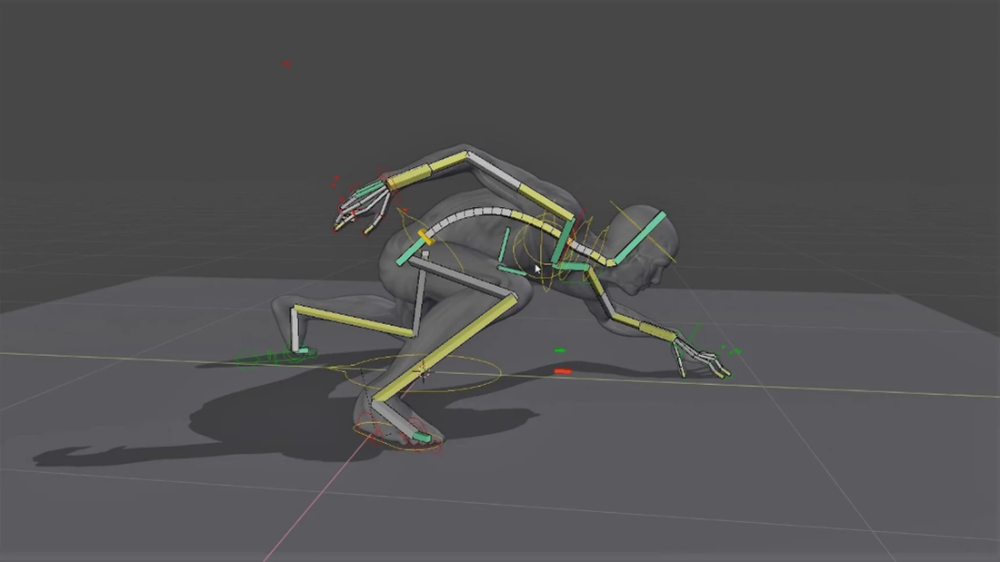

MENU
Animacija
Orodja za animacijo so inverzna kinematika (inverse kinematics), skeletne armature (skeletal armatures), deformacije na podlagi kavlja, krivulje in mreže,
animacije oblik, nelinearne animacije, omejitve in obteževanje oglišč (vertex weighting).
Rigging
Rigging je splošen izraz, ki se uporablja za dodajanje kontrol predmetom, običajno za namen animacije.
Pogosto se uporabljajo naslednje funkcije:
- • Armature/Armatures - Ta omogoča, da imajo predmeti iz mreže gibljive sklepe in je pogosto uporabljena za skeletno animacijo.
- • Omejitve/Constrains – Uporablja se za nadzor vrst gibov, ki so smiselni in dodajo funkcionalnost napravi (the rig).
- • Modifikatorji objektov – Modifikatorji pomagajo nadzorovati zapleteno deformacijo mreže.
- • Shape keys – Uporabljajo se za nadzor ciljnih oblik, na primer izrazi obraza.
- • Drivers – Tako lahko naprava kontrolira veliko različnih vrednosti hkrati in nekatere lastnosti samodejno posodablja glede na spremembe drugje.
Spodnja slika prikazuje primer rigginga, pri katerem se dobro vidijo kosti s katerimi kontroliramo gibanje predmeta med animacijo.
